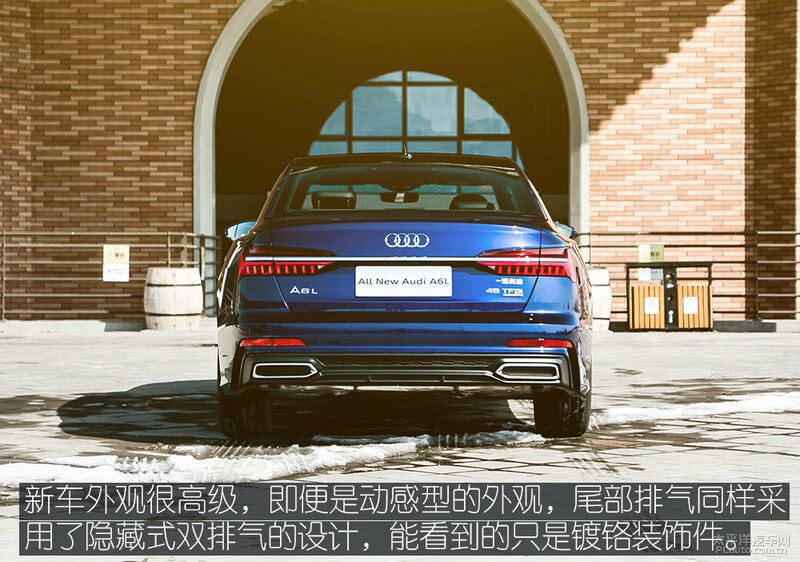

刚性艺术 不失年轻的艺术品
2019-03-131外观：刚柔并济
【太平洋汽车网 评测频道】前不久，全新奥迪A6L正式上市了，要说起它的历史，对中国汽车市场来说有着重大的意义，在相当长的一段时间几乎成为了国内官车、公务车的代表，并且一直享有豪华中大型轿车市场销量冠军的殊荣！对于如此多光环加身的豪华车而言，换代这件事往往没有那么简单，变与不变都需要深思熟虑。而这一次，奥迪交出了一份近乎完美的答卷！

刚柔并济
当冰冷的机械与柔美的女性相遇，那一抹淡淡的红唇与探索蓝交融、碰撞，探寻颜色的化学反应与魅力。车身结构似乎被打破又重组，与S line运动套件完美融合，动感且犀利的线条，给人以全方位立体变换的视觉感受。

奥迪尽可能在每一块外观细节上进行细致雕琢，这样才让全新奥迪A6L的外形气质实际上跟上一代完全不同。在车头部分，六边形大嘴和异形大灯尽管都采用了家族元素，但奥迪将大嘴尺寸拉的更宽，轮廓变得更犀利，使得车头视觉效果变得更加宽大，车身姿态更加低矮，在保持端庄气场的同时还能呈现出奥迪品牌独有的运动基因。造型犀利的LED前大灯在点亮的瞬间更加强化运动与科技感，让人过目不忘。
全新奥迪A6L在车侧的设计上保留了最原始的车型基因元素。平滑过度的车顶曲线线条搭配镀铬装饰是历代车型都不能舍去的，是一种车型的传承。
车身侧面乍看起来和上一代相似度很高，但奥迪运用出色的冲压工艺将旧款的一条平直的贯穿腰线变为了前后两条立体感更强的腰线，加上同样更加立体的下腰线以及车门第三条腰线，三腰线设计让整个侧面变得更加动感和年轻。


全新奥迪A6L并没有新A7和A8上那样的贯穿尾灯似乎多少有些遗憾，但一根贯穿式的镀铬条取代亮灯却恰好完美的定义了A6L的身份，相对于A7，它需要的是行政感，相对于A8，它又需要更低调。当汽车不再是冰冷的机器，跟艺术的融合也变得触手可及，无论出席什么场合，它都将是你的最佳选择！也是你最值得信赖的伙伴！
2内饰：是革新，更是升华
是革新，更是升华
全新奥迪A6L的内饰相比以往有着巨大的变化。相对于现款成熟稳重的风格，全新奥迪A6L拿出了看似激进的解决方案，将一切都推到重来。旧款奥迪A6L中控屏幕伸出和收回时的机械质感曾是无数人津津乐道的话题，然后在全新奥迪A6L上，奥迪又大胆地将全新奥迪A8L上首发的三屏式中控设计理念搬了过来。所不同的是，针对用户群体更加年轻的特点，全新奥迪A6L的中控线条在原来大量横直为主的基础上增加了更多折线，同时略微偏向主驾驶位，使得内饰整体风格更年轻的同时更加凸显了驾驶者优先的理念。
3动力：熟悉又陌生的“德味”
熟悉又陌生的“德味”
动力系统是全新奥迪A6L的亮点之一，新车除了提供搭载奥迪的第三代EA888 2.0T高/低功率涡轮增压发动机的40TFSI及45TFSI车型之外，还有一台搭载3.0T V6涡轮增压发动机+48V轻混技术动力系统的55TFSI车型供选择。作为老牌德系豪车，不管是哪种动力，一定都会给你完美的体验！
在舒适模式下，油门的前段响应稍显慵懒，但后半段发力就十分充足了。当切换到动态模式的时候，响应速度会明显变快，加速反应更直接也更为有效。转向助力也会随着模式变换到动态后，做出一个明显变沉的设定，让驾驶者更有信心。全新奥迪A6L搭载了渐进式转向系统，在相同车速行驶时，系统会随着方向的角度变化而改变转向比，弯多得路段自然就显现出优势了。
开过全新奥迪A6L之后，你会觉得一切改变都恰到好处，而且品质在意料之中，无论是动力匹配度、制动效果、操控感还是日常驾驶的舒适度，让奥迪的品质感表现的淋漓尽致！全新奥迪A6L在行驶品质方面保持了一如既往的优越性，在驾驶过程中很容易营造出高级感。而在此之余，它在驾驶乐趣方面也有了一定的提升，在满足行政级需求的同时，全新奥迪A6L也逐渐变得更年轻、更具有活力和艺术气息了。（图/文/摄：太平洋汽车网 杨震）
4车型参数配置对比